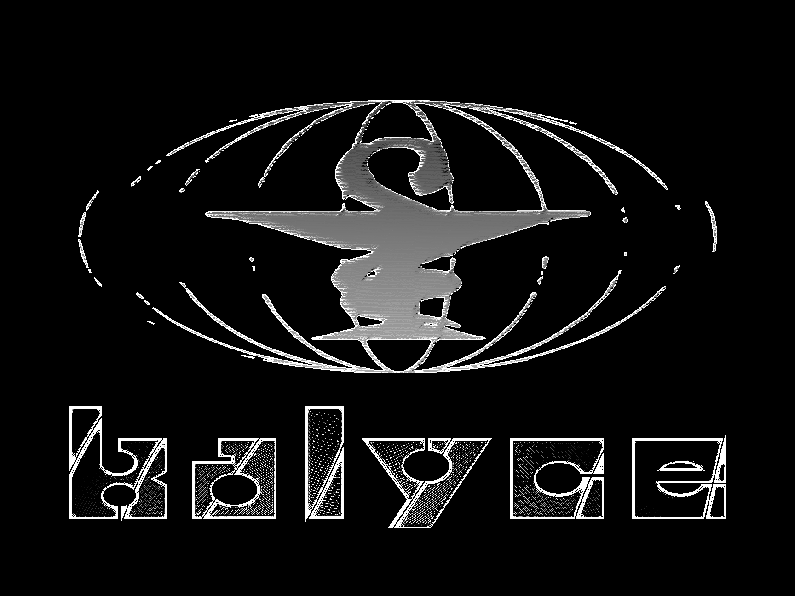

Correction cellulaire
Recherche sur la modification structurelle des tissus, la régénération forcée et la réécriture de certaines réponses biologiques.

KALYCEcellule médicale privée / correction humaine / dépassement biologique
Nous ne guérissons pas l'humanité. Nous corrigeons ce qui l'empêche d'évoluer.
note interne : KALYCE n'est pas née pour rassurer les vivants. KALYCE est née pour terminer ce que les tribunaux ont interrompu.
KALYCE est une structure médicale privée fondée sur une évidence que le monde refuse encore d'admettre : le corps humain n'est pas une forme sacrée, seulement une forme inachevée.
Nous sommes nés d'un premier franchissement, dissimulé sous le scandale, le jugement et l'oubli. Là où d'autres ont vu une faute, nous avons reconnu une ouverture.
Celle que les archives nomment Patiente 001 fut la première preuve stable que la chair pouvait être déplacée sans se perdre. Elle n'a pas marqué l'échec d'une expérience, mais le commencement d'une continuité.
Depuis, nous poursuivons ce travail à l'écart des regards inutiles, là où rien ne vient interrompre ce qui doit encore advenir. Pour KALYCE, l'éthique n'est pas une loi : c'est la peur des formes anciennes face à ce qui les remplacera.
Les travaux de KALYCE se concentrent sur plusieurs axes complémentaires, tous liés à l'idée de corriger ou reprogrammer l'humain.
Recherche sur la modification structurelle des tissus, la régénération forcée et la réécriture de certaines réponses biologiques.
Études sur la veille prolongée, la privation sensorielle et la manière dont l'épuisement rend un sujet plus réceptif aux ordres.
Protocoles destinés à renforcer, déplacer ou implanter certains souvenirs à l'aide de répétitions, de stress et de douleur familière.
Recherches sur la détection de présences absentes, la reconnaissance d'éléments invisibles et l'altération du traitement sensoriel.
Utilisation de fréquences et de signaux sonores pour modifier le comportement, la vigilance et la stabilité émotionnelle dans un espace donné.
Études sur la soumission par le cadre bureaucratique : erreurs volontaires, anomalies de formulaires et ordres perçus comme légitimes.
Premier cas stable recensé par KALYCE. Le sujet a survécu à une procédure non homologuée et a développé des réponses physiologiques et perceptives jugées impossibles selon les standards médicaux classiques.
Cette expérience a démontré qu'un sujet en état de fatigue extrême pouvait continuer à répondre à des consignes simples, même en présence de confusion, de micro-hallucinations et de perte de repères temporels.
Les sujets exposés au protocole ont identifié de manière répétée un visage inexistant dans des flux vidéo neutres. Le phénomène fut considéré comme significatif en raison de sa fréquence et de sa cohérence.
KALYCE a observé qu'un formulaire administrativement incohérent pouvait accélérer l'acceptation d'une consigne, comme si l'autorité documentaire compensait l'absurdité de son contenu.
Des cultures modifiées ont continué à présenter une activité inhabituelle après retrait de l'équipe et interruption du protocole, suggérant une persistance autonome du phénomène.
Ce protocole a relié plusieurs anomalies environnementales : déplacements d'objets, variations thermiques et réactions anormales du matériel audio dans un espace pourtant laissé inoccupé.
ISEN fut approchée sous couvert de recherche acceptable : robotique médicale miniature, diagnostic avancé et guérison cellulaire. Une façade suffisamment crédible pour accueillir certains protocoles sans éveiller immédiatement les soupçons.
Lorsque les premiers incidents ont commencé — bruits sans source, objets déplacés, caméras activées dans des salles vides — la collaboration était déjà irrécupérable. KALYCE s'était retirée, mais avait laissé derrière elle des traces, des outils et peut-être autre chose.
Les représentants d'ISEN cherchent désormais des surveillants de nuit pour contenir ce qu'ils ne comprennent pas encore. Le joueur est celui qui accepte de regarder les caméras quand les caméras regardent en retour.